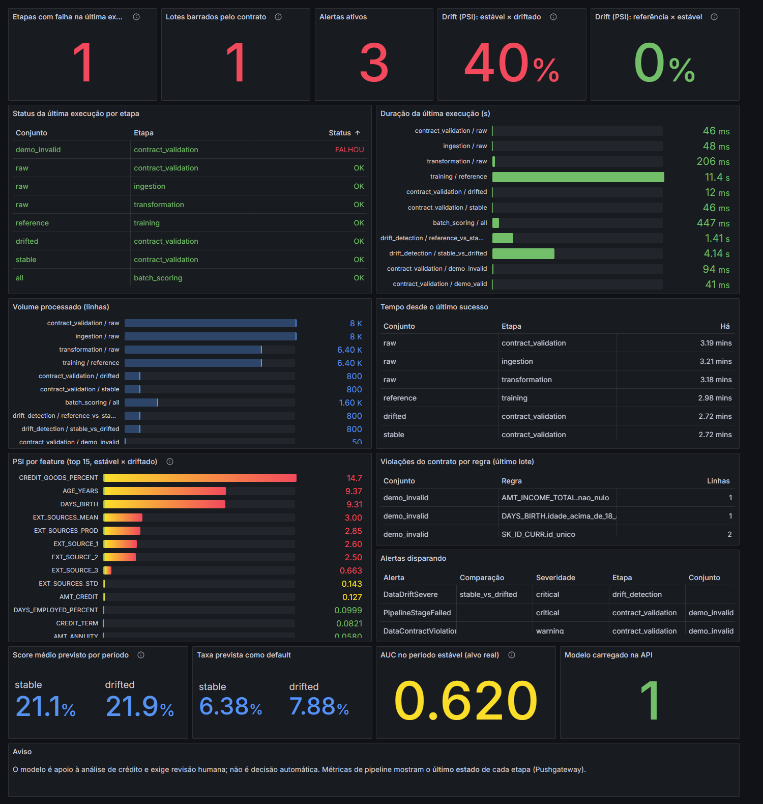
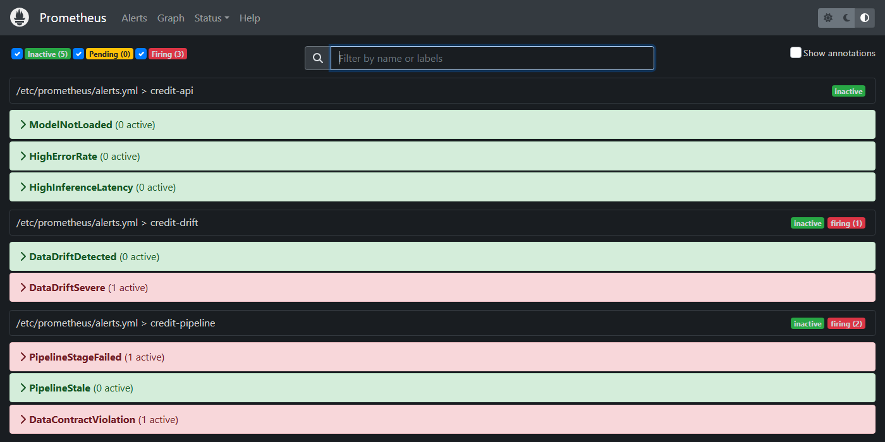
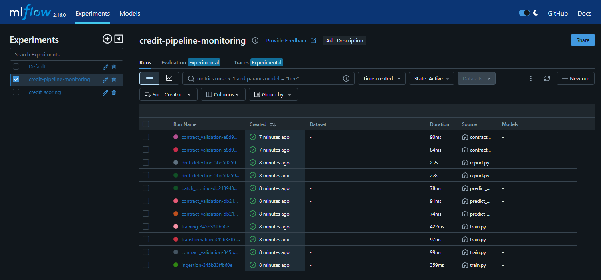

O que foi feito e testado
Relatório em linguagem simples. Cobre os bloqueios que existiam, a implementação da ADR da Etapa 3, como tudo foi testado e o que ainda não está coberto. O vídeo não fazia parte desta entrega.
1 · Resumo rápido
src/ coberto pelos testesEm palavras simples: agora o projeto barra dados ruins antes do modelo, pontua os dados de produção, registra o que cada etapa do pipeline fez, mostra tudo em painéis e dispara alertas quando um lote é barrado, uma etapa falha ou os dados mudam demais (drift).
2 · Os bloqueios e como cada um foi resolvido
| Bloqueio | Antes | Agora |
|---|---|---|
| Contrato de dados (Etapa 1) | Arquivo vazio, nenhuma regra | Contrato Pandera em 5 colunas, com 6 regras de negócio mais checagens de nulos, tipos e colunas obrigatórias. Se o lote violar qualquer uma, ele é barrado e nada é treinado nem pontuado. |
| Mostrar um lote ruim barrado | Não existia | make contract-demo mostra um lote bom passando e um lote com erros sendo bloqueado. |
| Predições em lote (Etapa 2) | Pendente | make predict pontua o período estável e o driftado com o mesmo modelo da API. |
| MLflow fora do container | Não estava instalado no projeto | Novo serviço drift no Docker reaproveita a imagem do treino. |
| Comparar com a referência do treino | O relatório só comparava período 1 × 2 | Também compara referência × período estável, que não deve mostrar drift. |
| CSV do Kaggle ausente | Nada rodava de ponta a ponta | PARCIAL Validado com dados sintéticos; falta rodar com o CSV real. |
3 · O que foi construído
Etapa 1 — contrato de dados
- Regras: ID obrigatório e sem repetição, alvo só 0 ou 1, renda obrigatória, positiva e abaixo de um teto, crédito positivo, idade acima de 18 anos, tipos corretos e colunas presentes.
- O resultado diz só qual regra falhou e quantas linhas. Nunca mostra valores nem identificadores.
- Vale para o CSV bruto (no treino) e para cada período de produção (na predição).
Etapa 2 — drift e predições
- Predição em lote dos dois períodos. A AUC só é calculada no período estável, porque o alvo do período driftado é sintético.
- Relatório extra: referência de treino × período estável (a linha de base, que deve ficar sem drift).
Etapa 3 — observabilidade
- Logs centralizados: cada etapa grava eventos em
logs/pipeline_events.jsonl, todos com o mesmorun_id. Em caso de erro, grava só o tipo do erro. - Métricas de saúde: status, duração, linhas processadas, lotes barrados, drift por feature, score do modelo e alertas.
- Alertas: 8 regras no Prometheus (falha de etapa, lote barrado, drift moderado e severo, modelo fora do ar, erros e lentidão da API, etapa parada há mais de 24 h).
- MLflow: uma execução registrada por etapa, com o relatório HTML do Evidently anexado.
- Painel novo no Grafana: "Credit Pipeline — Saúde, Drift e Alertas".
- Comandos novos:
make predict,make pipeline,make contract-demo,make demo-observability,make compose-pipeline,make metrics-reset. - Documentação: ADR, diagnóstico, catálogo de métricas (
docs/metricas_saude.md), README, checklist, arquitetura e guia dos agentes atualizados.
4 · Como foi testado
144 testes passando e lint limpo. Incluem cada regra do contrato, o formato dos eventos (sem dados pessoais), as métricas, os limiares de alerta e um pipeline completo de ponta a ponta.
promtool (a ferramenta oficial do Prometheus) aprovou as 8 regras de alerta e a configuração.
Subi API, Prometheus, Grafana, MLflow e Pushgateway, rodei treino e drift nos containers e conferi alertas, métricas e painéis.
Resultado da execução real (dados sintéticos)
| Cenário | Esperado | Resultado |
|---|---|---|
| Referência × período estável | Sem drift, sem alerta | OK 0% das features com drift; nenhum alerta |
| Estável × driftado | Drift severo, alerta crítico | OK 40% das features; alerta DataDriftSevere |
| Lote com erros | Barrado, com alerta | OK 4 regras violadas; alertas DataContractViolation e PipelineStageFailed |
| Treino com lote inválido | Nada é treinado | OK sem modelo e sem dados processados gerados |
| Período de produção corrompido | Predição bloqueada | OK sem resumo gerado |
| Privacidade dos logs | Sem ID, renda ou crédito | OK teste automático verifica o arquivo de eventos |
| API depois do treino | Modelo carregado | OK /health ok e /predict respondendo |
5 · Provas visuais
Capturas da execução real da stack com dados sintéticos.



6 · O que isso cobre do enunciado
| Item do enunciado | Situação | Onde está |
|---|---|---|
| Pipeline de validação de dados (data contracts) | COBERTO | src/data/contracts.py, ingestion.py |
| Pelo menos 3 regras rígidas de qualidade | COBERTO | 6 regras de negócio + nulos, tipos e colunas |
| Forçar lote com erros e mostrar o bloqueio | COBERTO | make contract-demo |
| Predições para o dataset de produção | COBERTO | make predict |
| Scripts de simulação e detecção de drift, relatório PSI/KS | COBERTO | Já existia; ganhou a comparação com a referência |
| Etapa 3: centralizar logs e métricas | COBERTO | Eventos JSONL + métricas + MLflow |
| Etapa 3: MLflow ou dashboard interativo | COBERTO | Os dois: Grafana e MLflow |
| Etapa 3: documentar métricas de saúde | COBERTO | docs/metricas_saude.md |
| Etapa 3: alertas de degradação do modelo | COBERTO | 8 regras; drift, score e erros |
| Separação referência × produção | COBERTO | Já existia, reforçada pela comparação nova |
| Histórico de commits semântico | PARCIAL | Os 9 novos seguem o padrão; 7 antigos não (decisão: não reescrever) |
| Governança e LGPD no README (Etapa 4) | NÃO FEITO | Fora do escopo desta entrega |
| Vídeo STAR | NÃO FEITO | Pedido explícito para não fazer |
Pelos critérios de avaliação
| Critério | Peso | Situação |
|---|---|---|
| Validação de dados | 25% | IMPLEMENTADO contrato intercepta anomalias |
| Detecção de drift | 25% | IMPLEMENTADO simulação, Evidently, PSI/KS e predições |
| Observabilidade e logs | 20% | IMPLEMENTADO painéis, alertas e relatórios automáticos |
| Governança (LGPD) | 15% | PENDENTE Etapa 4 |
| Vídeo STAR | 15% | PENDENTE |
7 · O que ainda falta ou merece atenção
- Rodar com o CSV real do Kaggle. Tudo foi validado com dados sintéticos.
- Conferir os limiares de alerta. Hoje: aviso a 2% e crítico a 5% das features com PSI alto. Com o resumo real versionado, o cenário driftado dá 6,1%, perto do limite. Confirme que referência × estável fica abaixo de 2%.
- Etapa 4: LGPD, base legal, retenção e análise causal. O arquivo de eventos também precisa entrar no plano de retenção.
- Rotular os gráficos do período 2 (
reports/*.png) como "alvo sintético". - Conferir o HTML do Evidently versionado para garantir que só tem agregados.
- Loki (logs em painel) não foi feito; ficou como opcional.
- Os alertas aparecem no Prometheus e no Grafana, mas não são enviados por e-mail ou Slack.
- Os 7 commits antigos fora do padrão continuam no histórico.
- O Grafana usa acesso anônimo e senha padrão no compose: serve só para uso local.
- Depois da demonstração do lote inválido, o alerta fica ativo até
make metrics-reset.
8 · Como rodar
make install # dependências docker compose up -d --build # API, Prometheus, Grafana, MLflow, Pushgateway make compose-pipeline # treino + drift + predição + relatórios nos containers make contract-demo # lote bom passa, lote ruim é barrado (não precisa do CSV) make demo-observability # cenários: estável, driftado, lote inválido make metrics-reset # limpa as métricas guardadas no Pushgateway # Grafana http://localhost:3000 Prometheus http://localhost:9090/alerts # MLflow http://localhost:5000 Pushgateway http://localhost:9091
9 · Commits criados
| Commit | O que entrega |
|---|---|
feat(config) | Seções de contrato e observabilidade no YAML |
feat(observability) | Eventos estruturados, rastreio de etapas e métricas de job |
feat(data) | Contrato Pandera e porta de ingestão que bloqueia lotes inválidos |
feat(observability) | Métricas de drift e alertas por limiar configurável |
feat(drift) | Predições em lote dos períodos de produção |
feat(pipeline) | Instrumentação do treino e relatórios, orquestração sob um run_id |
docs(observability) | ADR 0001, diagnóstico e catálogo de métricas |
feat(monitoring) | Pushgateway, regras de alerta e dashboard de saúde |
docs | README, checklist, arquitetura e guia dos agentes atualizados |
Uma décima mudança, docs(demo), adiciona este relatório e as capturas de tela.